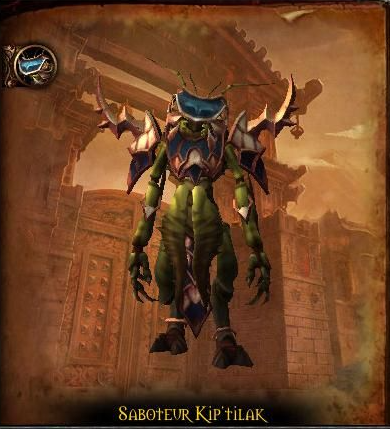
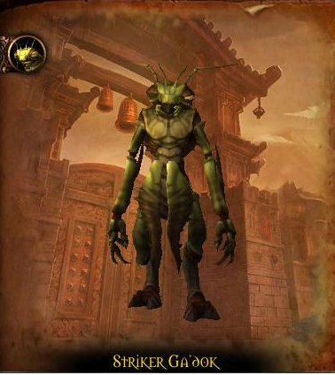
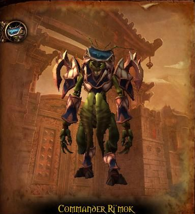
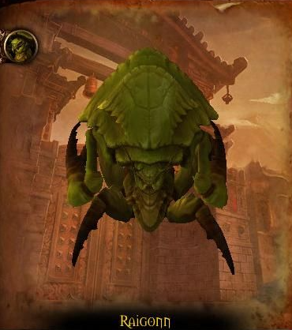

Saboteur Kip'tilak
HP: 843.100
- Sabotage
- Throw Explosives
- World in Flames
Tactics
Egy tűz vonal 3-4 felé ágazva fog végig menni a termen, ezeket el kell kerülni
Hogyha rád castolja a Sabotage nevű spellt, akkor menj valamelyik kapuhoz (észak,dél,kelet,nyugat) és kerüld el a tűzet
60%-nál és 30%-nál a boss elnyomja a World in Flames nevű képességét, ami felgyújtja az egész termet, ezt a healereknek ki kell healelni

Striker Ga'dok
HP: 675.450
- Prey Time
- Impaling Strike
- Strafing Run
- Acid Bomb
Tactics
A tanknak az egész fight során ki kell húznia a bosst a zöld tócsából
Impaling strike-nál az aktuális targetnek leveszi az 50% hp-ját ezt ki kell healelni.
Prey Time debuff: egy bosshoz közeli emberre rárak egy debuffot, aki 20k/mp dmg-t fog bekapni 5 mp-ig.
Amikor a boss 70% és 30% életerőhöz ér, felszáll és ledob egy bombát a platformra, amit ellep a tűz, ez a tűz 10k dmg oszt ki 1 mp alatt, ebből egy csoportba ki kell állni oldalra.
Az előbb említett 70%-nál és 30%-nál jönni fog 3 add, amit lekell ölni.

Commander Ri'mok
HP: 675.450
- Viscous Fluid
- Frenzied Assault
- Krik'thik Swarmer
Tactics
Folyamatosan zöld tócsákot fog lerakni a boss, ezekből a tanknak mindig ki kell húznia
Néhány másodpercenként addok fognak jönni, ezeket a tanknak meg kell fognia, és gyorsan meg kell ölni őket
Amikor a boss a Frenzied Assault képességet castolja ki kell állni előle a tanknak.

Raigonn
HP: 675.450
- Impervious Carapace
- Vulnerability
- Battering Headbutt
Tactics
1. Fázis
a teremben vannak Artillery-k, amivel dpseknek fel kell mennie a bossra és meg kell ölnie a Weak Spot-ot ami 3372k hpval rendelkezik, addig kell felmenni, amíg meg nem ölte a Weak Spotot.
A tanknak meg kell fognia az addokat
- A lent maradó dpsek öli az addokat.
2. Fázis
- 21079k hp-val rendelkezik a bossunk, de 300%-kal többet sebzünk a bossba.
- Fixated spellel kiválaszt egy embert, akit el kezd követni, de 75%-kal megnő a movement speedje. Az adott embernek futtatni kell a bosst, ha nem akar meghalni.
- Castolni fog egy Stomp nevű képességet ami 20k physical dmg-t okoz a közelben álló embereknek, és ez a Frenzy-vel tovább nő 25%-kal, ezt vagy kihealeli a heal, vagy kicsit áltávolodunk a bosstól.